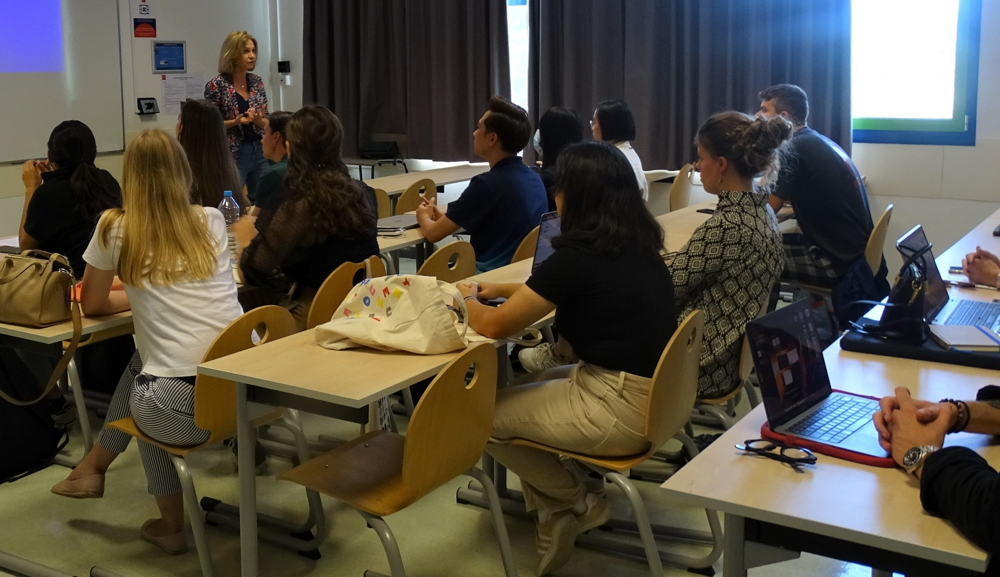

Organizational Behavior
Comprendre les comportements individuels et collectifs au travail.
Recherche · Publications · Transmission
Une pédagogie active qui relie concepts, cas réels, histoire et recherche.
Enseigner
Mes enseignements portent sur le comportement organisationnel, la théorie des organisations, le management, la négociation et l’histoire des organisations. Les cas, les jeux de rôle et les exemples issus de la recherche occupent une place centrale.

Comprendre les comportements individuels et collectifs au travail.
Lire les structures, les changements et les relations de pouvoir.
Utiliser l’histoire et les humanités pour enrichir le regard managérial.